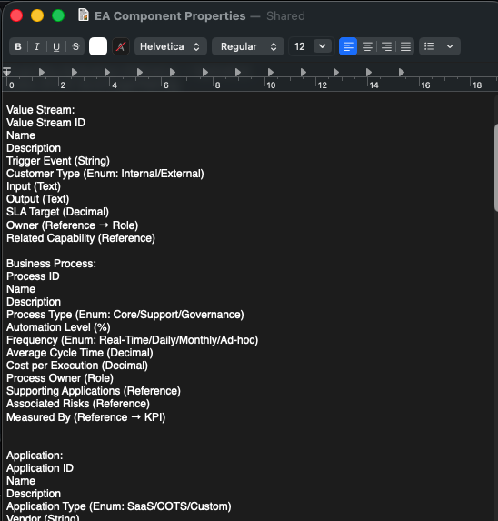

EA Skill Engine.
Production-grade LLM system that autonomously maps enterprise architecture — reducing weeks of manual consultant work to hours of guided AI sessions.

Context
Enterprise architecture engagements traditionally require weeks of stakeholder interviews, spreadsheet aggregation, and manual validation before a single capability map can be produced. The EA Skill Engine eliminates that bottleneck by encoding EA methodology, platform knowledge, and organisation-specific context into a layered LLM skill system that can reason across all 11 architecture domains simultaneously.
Architecture
The system follows a two-layer routing design. The base layer encodes EA frameworks — TOGAF, ArchiMate, Zachman — providing methodology-grounded reasoning regardless of client or tooling. The platform layer handles Avolution ABACUS integration: generating VB.NET scripts, catalog configurations, dashboard definitions, and WAT algorithm flows. Organisation-specific layers (currently Bajaj Auto) encode element IDs, traceability chains, and domain relationships that would normally live in a consultant's head.

Delivered Impact
Deployed in production at Invecto Technologies for the Bajaj Auto engagement. Used for the KTM acquisition architecture assessment, application portfolio rationalisation, and strategic alignment analysis. What previously required a team working over multiple weeks now runs in structured AI-assisted sessions measured in hours.